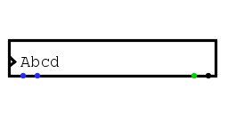

| Library: | Input/Output |
| Introduced: | 2.2.0 |
| Appearance: |  |
This component allows the circuit to read keys typed from the keyboard - as long as the keys are representable in the 7-bit ASCII code. After clicking the component using the poke tool, the user can type characters, which accumulate in a buffer. At all times, the ASCII value for the leftmost character in the buffer is sent out the rightmost output. When the clock input is triggered, the leftmost character disappears from the buffer and the new leftmost character is sent on the rightmost output.
The supported characters for the buffer include all the printable ASCII characters, as well as space, newline, backspace, and control-L. In addition, the left-arrow and right-arrow keys move the cursor within the buffer, and the delete key deletes the character to the right of the cursor (if any).
The component is asynchronous in the sense that when the buffer is empty and the user types a character, that character is sent immediately as an output, without any wait for a clock pulse.
Rising Edge,then when the clock input changes from 0 to 1, the leftmost character is consumed (when enabled by the Read Enable input). If it is
Falling Edge,, then this happens when the clock input changes from 1 to 0.
Pressing the mouse button into the component gives keyboard focus to the component, and a vertical-bar cursor will be displayed.
Each character typed will then be inserted into the buffer, as long as the buffer hasn't reached its capacity and the character is one of those that the component supports: the printable characters within the 7-bit ASCII code, as well as space, backspace, newline, and control-L. Additionally, the user may type the left-arrow and right-arrow keys to change the location of the cursor within the buffer, and the user may type the delete key to delete the buffer character (if any) just to the right of the cursor.
None.